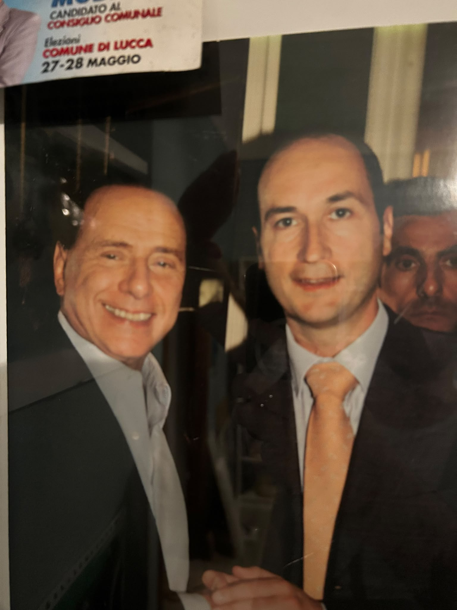

Direttore sviluppo · Rapporti istituzionali
Geom. Marco Modena
Un mago del business. Dove gli altri vedono un rudere, lui vede un affare; dove gli altri vedono un affare, lui ha già firmato. Le sue strette di mano hanno attraversato decenni, palazzi e repubbliche.
Cardine fisso dell'agenzia, punto di riferimento immobile in un mercato che si muove: con lui non esistono imprevisti, solo certezze. Da solo dà più sicurezze di un rogito, di una fideiussione e di un mattone messo a regola d'arte.
Contatti ovunque,
siamo ovunque.